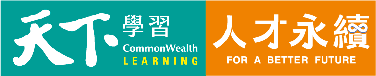
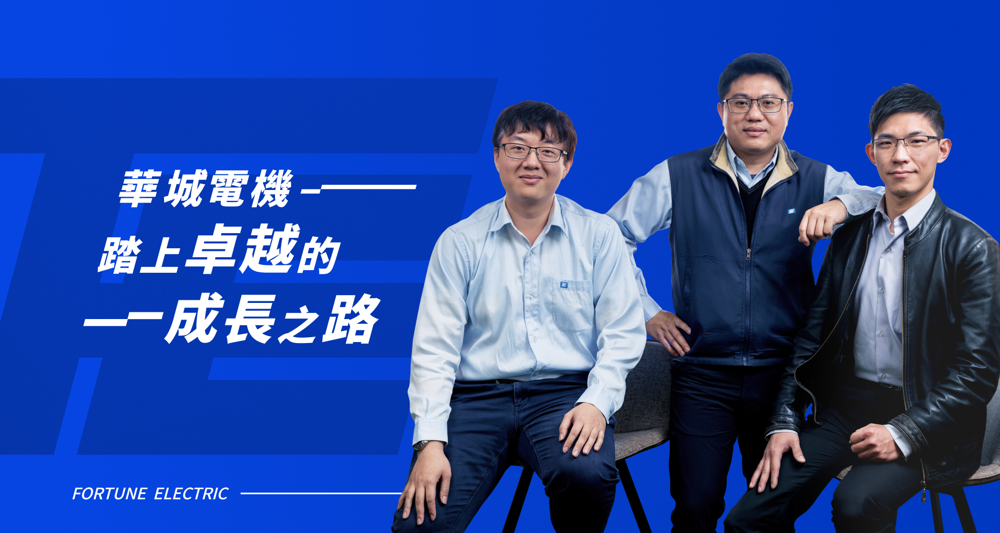
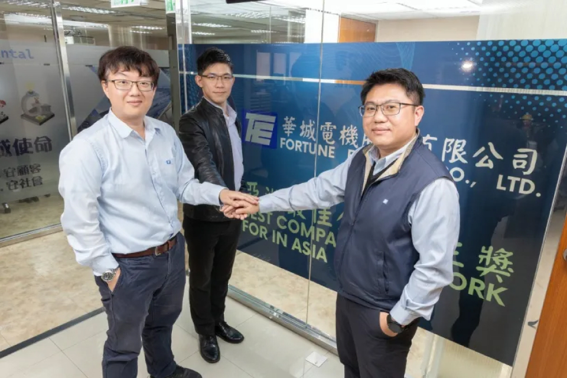

每個日常用電的幸福場景，都有華城電機設備與技術的身影，是社會運作的推手，更是未來推動再生能源、智慧電網的要角。
一份兼具使命感與發展潛力的職涯，正等待你的挑戰!

華城電機邁開大步前行：以知識力與創新舞台賦能員工，為企業永續找到全新定義
作為國內生產製造配電及電力變壓器、配電盤、開關設備與相關配電器材的華城電機，即便已邁入第55個年頭，但團隊依舊充滿創新活力不被傳統產業的框架束縛，更在去年（2023）榮獲「HR ASIA亞洲最佳企業雇主獎」，肯定了華城電機在員工滿意度、福祉和個人發展等方面的努力，更讓人好奇這個老字號招牌如何擄獲員工的心、一同攜手共創企業新局？
READ MORE
人才，是華城進步的關鍵
華城規劃一系列員工發展計畫，運用全方面的培訓賦能員工，並透過定期舉辦共識營與跨部門活動，重視員工關懷、ESG、DEI領域之發展並強化員工向心力與團隊合作，為員工與企業共同打造更美好的未來。


華城電機邁開大步前行：以知識力與創新舞台賦能員工，為企業永續找到全新定義
作為國內生產製造配電及電力變壓器、配電盤、開關設備與相關配電器材的華城電機，即便已邁入第55個年頭，但團隊依舊充滿創新活力不被傳統產業的框架束縛，更在去年（2023）榮獲「HR ASIA亞洲最佳企業雇主獎」，肯定了華城電機在員工滿意度、福祉和個人發展等方面的努力，更讓人好奇這個老字號招牌如何擄獲員工的心、一同攜手共創企業新局？
年過50 仍站在趨勢尖端的產業！打造未來電力網
有專家說，經濟好的時候不能缺電；而經濟不好的時候，更不能缺電。從家家戶戶都有的社區變壓器、配電盤，還有馬路上的綠色電箱，大到台北捷運裡面的供電系統配備，都有華城電機55年品牌的身影。隨著永續抬頭，新能源也成為華城電機下個階段的重點。